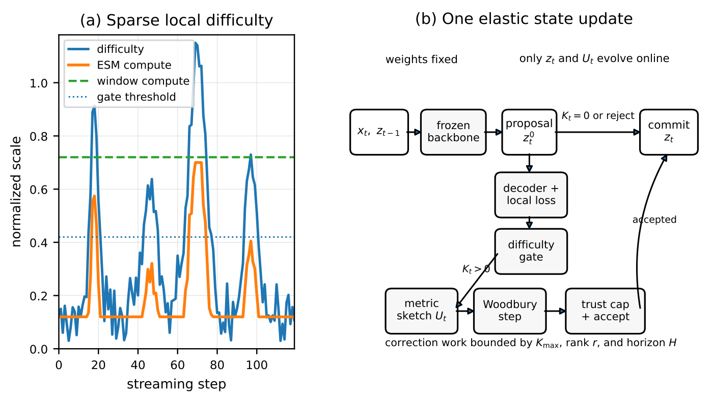
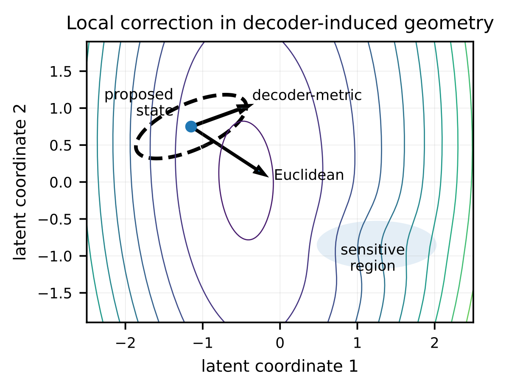
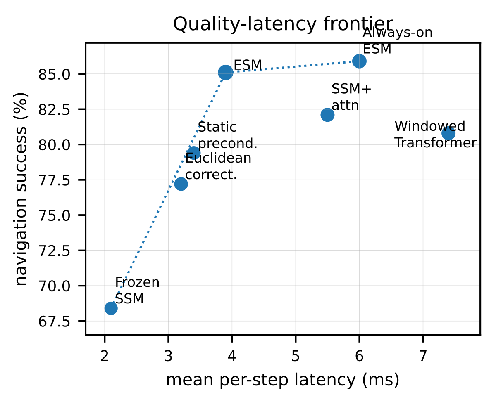
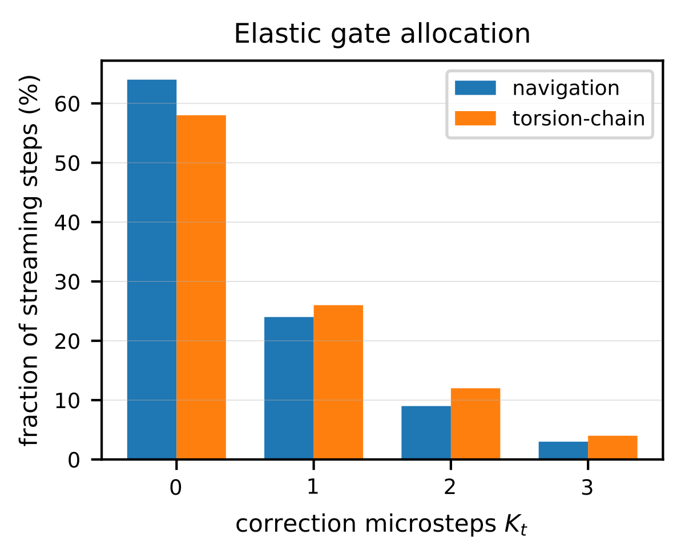

Who Needs Attention Anyway? Elastic State Models
Elastic State Models keep a frozen streaming backbone in the loop, then spend a small geometry-aware correction budget only on fragile timesteps. The result is a quality-latency control mechanism for real-time sequence tasks.
Attention is useful because it can revisit information when the recurrent state is not enough. ESM asks for a cheaper version of that behavior: a streaming model proposes a latent state, a causal gate estimates whether the state is locally fragile, and a bounded latent optimizer repairs only the states where extra computation is justified.
Overview
The design separates the always-on path from the repair path. Most timesteps use the frozen backbone directly. Difficult timesteps receive at most \(K_{\max}\) correction microsteps, so the method has explicit compute and latency bounds.

Method
ESM is local optimization inside a streaming model. The gate is causal, the correction step is metric-preconditioned, and the accept test prevents a bad local model from silently changing the latent trajectory.
1. Propose
A frozen SSM or RNN maps \((z_{t-1},x_t)\) to a candidate latent state \(z_t^0\).
2. Gate
A small causal classifier maps diagnostics \(d_t\) to an integer budget \(K_t\).
3. Repair
A decoder-metric step moves the state only when the predicted and observed losses agree.


Implementation Excerpts
The implementation is intentionally auditable. The gate chooses a bounded budget, the metric sketch makes the solve cheap, and each correction is clipped and accepted before it changes the stream.
Streaming ESM step
def esm_step(z_prev, x_t, metric_state):
z0 = backbone(z_prev, x_t)
loss0, diagnostics = causal_local_loss(z0)
K = choose_budget(gate(diagnostics))
if K == 0:
return z0, decay(metric_state), {"K": 0, "accepted": 0}
U = refresh_metric_sketch(z0, metric_state)
z = z0
accepted = 0
for _ in range(K):
loss, grad = local_loss_and_grad(z)
step = -woodbury_solve(grad, U, damping=1e-3)
step = trust_clip(step, U, radius=trust_radius)
candidate = retract(z + step)
if not accept_step(loss, candidate, step, U):
break
z = candidate
accepted += 1
return z, U, {"K": K, "accepted": accepted}Low-rank metric solve
def woodbury_solve(g, U, damping):
"""Return (damping I + U U^T)^-1 g."""
r = U.shape[-1]
eye = torch.eye(r, device=U.device, dtype=U.dtype)
small = damping * eye + U.T @ U
coeff = torch.linalg.solve(small, U.T @ g)
return (g - U @ coeff) / dampingBudget gate
def choose_budget(logits, max_budget=3):
probs = logits.softmax(dim=-1)
K = torch.argmax(probs, dim=-1)
return torch.clamp(K, min=0, max=max_budget)
def should_refresh_metric(diagnostics):
return diagnostics["drift"] > 0.2 or diagnostics["rank_energy"] < 0.9A reproducible ESM report should include the gate histogram, zero-budget fraction, accepted step count, sketch condition number, rejection bursts, and p50/p90/p99 latency.
Controlled Results
The key diagnostic is whether correction is rare, concentrated near difficult states, and useful when it fires. The gate histogram makes that compute allocation visible.

| Navigation method | Success up | Collisions / 1k down | Mean ms down | Avg. \(K_t\) down |
|---|---|---|---|---|
| Frozen SSM | 68.4% | 37.1 | 2.1 | 0.00 |
| Windowed Transformer | 80.8% | 24.8 | 7.4 | -- |
| SSM + attention head | 82.1% | 22.1 | 5.5 | -- |
| Euclidean latent correction | 77.2% | 31.6 | 3.2 | 0.71 |
| Always-on ESM | 85.9% | 17.9 | 5.9 | 3.00 |
| Gated ESM | 85.1% | 18.6 | 3.9 | 0.51 |
| Torsion repair method | Success up | Shape error down | Violations / 1k down | Mean ms down |
|---|---|---|---|---|
| Frozen SSM | 61.7% | 0.94 | 49.2 | 1.8 |
| Euclidean latent correction | 74.6% | 0.68 | 35.7 | 3.0 |
| Static preconditioner | 76.1% | 0.64 | 30.4 | 3.4 |
| Always-on ESM | 83.7% | 0.50 | 16.9 | 5.2 |
| Gated ESM | 82.6% | 0.52 | 17.8 | 3.7 |